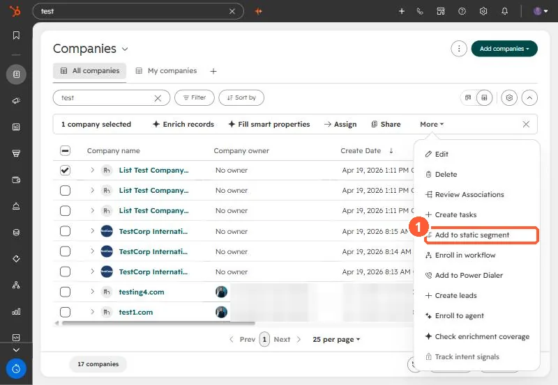

Short answer
In my own portal, a list of contacts who had replied to outreach also held active customers, former customers, and open opportunities. I moved those into their own static segment and kept agency employees and recruiters in the prospect pool. Select the records, open More, and choose Add to static segment. HubSpot allows up to 100 records at a time this way. Then exclude that segment from prospecting sends, or exclude customer lifecycle stages in an active segment.
1. What was in the list
The list was everyone who had replied to my prospecting emails, sorted by last reply. Reading through it, some were active clients, some were former clients, some had open deals, and some had nothing to do with the outreach. The rule I settled on:
- Move out: clients, former clients, open opportunities.
- Keep: agency employees, who can pass HubSpot work along, and recruiters, who refer it.
2. Add them to a static segment
Select the records in a view, open More, and choose Add to static segment. HubSpot's bulk edit article says you can add up to 100 at a time this way. The same menu exists on companies, shown here in my demo.


3. Keep them out next time
Exclude that segment in the next send, or build the prospect list as an active segment that leaves out customer lifecycle stages. A worked example is in building a send-safe list. Labeling agencies separately is in agencies vs businesses.